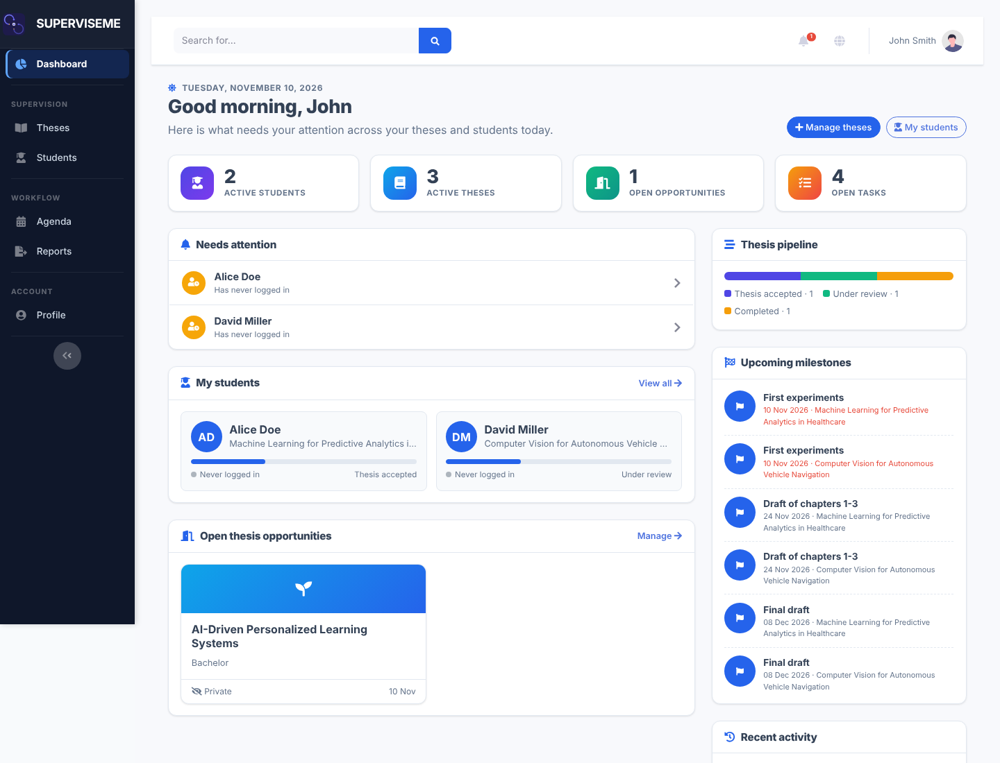
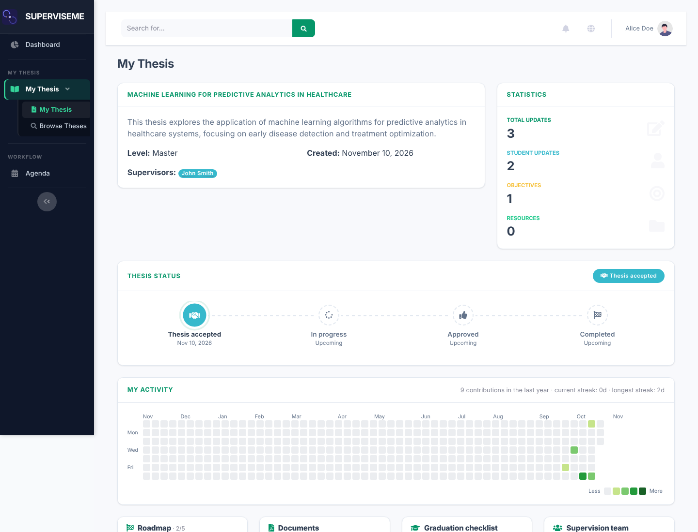
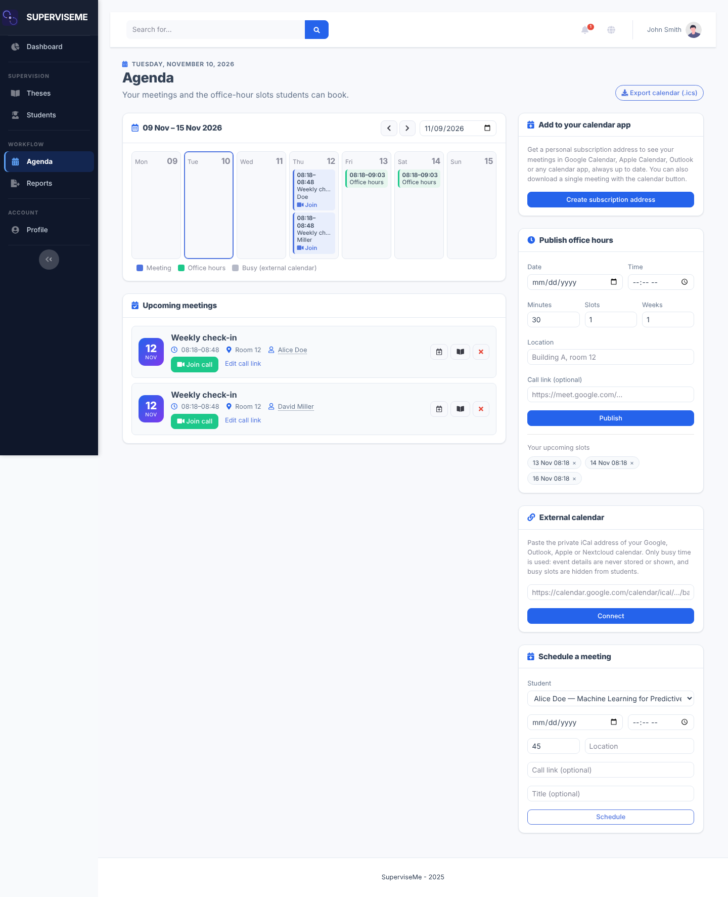
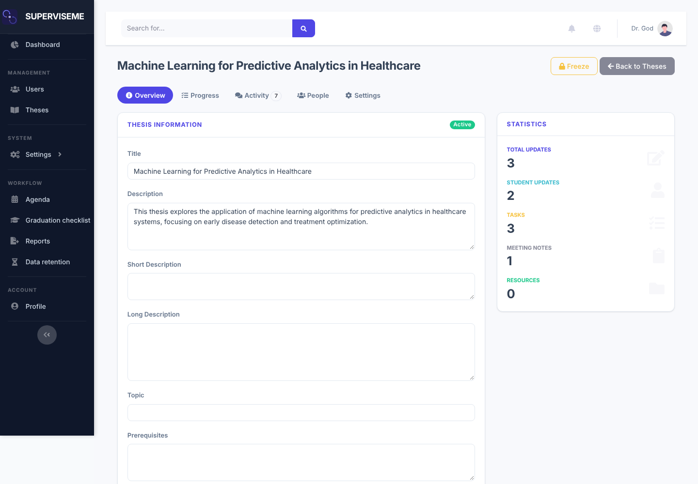
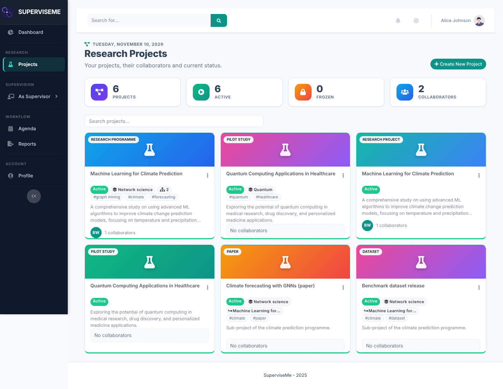
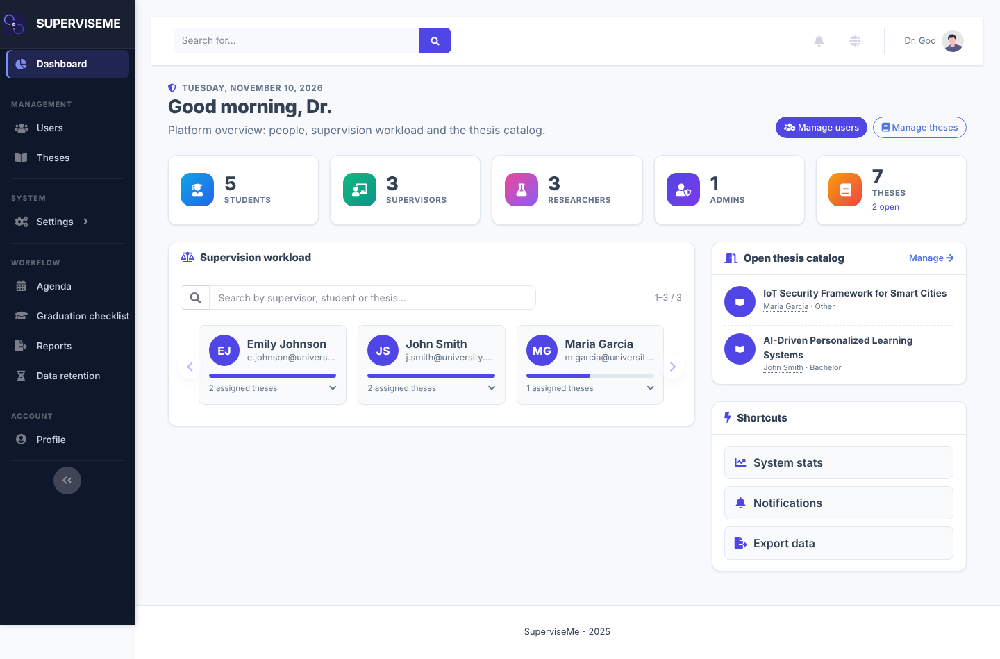

Thesis supervision,
finally organised.
SuperviseMe brings students, supervisors, researchers and admins onto one open-source platform: thesis milestones, meetings, research projects, outputs and reminders — in a single clear workflow.
- Open source · GPL-3.0
- Docker ready
- ORCID & REST API
See it in action
Real screens from the running platform.



The interface
Everything about a thesis, in one place
Milestones, to-dos, meetings, files and a shared timeline. Students always know what is next; supervisors see who needs attention at a glance.
Roles & workflows →
Research projects and outputs
Researchers manage projects, publications, datasets and software, import from ORCID and link outputs to people, projects and theses.
ORCID integration →
Admin tools that scale
Users, capacity limits, reminders, statistics, duplicate merge, activity trail and one-click backup and restore.
Administration guide →
What you get
Thesis lifecycle
Proposals, assignments, milestones, to-dos, meetings and final state tracking.
Research outputs
Publications, datasets and software with BibTeX, CodeMeta and CITATION.cff exports.
Smart reminders
Email and Telegram nudges for deadlines, capacity and stalled projects.
Capacity control
Per-supervisor limits with defaults and warning thresholds.
Integrations
ORCID import with Crossref enrichment, social login and a REST API v1.
Safe operations
Audit trail, duplicate detection and portable backups tied to the schema.
Who uses it
Students
Track progress and deadlines, share files, book meetings.
Supervisors
Oversee all theses, spot delays, keep an agenda.
Researchers
Manage projects, outputs and ORCID imports.
Admins
Run users, reports, statistics and backups.
Start now
Clone
Get the code from GitHub.
Configure
Copy .env.example and set your secrets.
Run
Start with Docker or pip.
git clone https://github.com/GiulioRossetti/SuperviseMe.git
cd SuperviseMe
cp .env.example .env
docker compose up -d